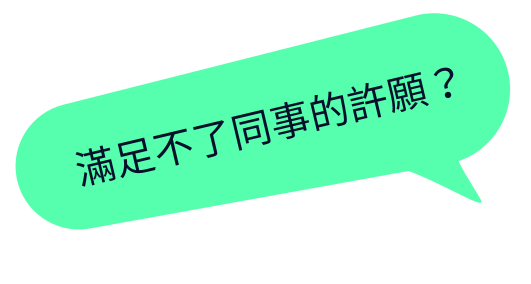
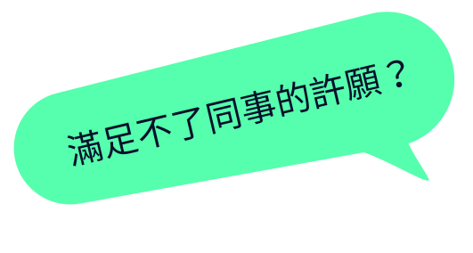

Q&A
Q1
如果某一週不想新挑戰失敗，是否能再繼續挑戰後面關卡？
可以，儘管那週挑戰失敗，之後您仍可以挑選喜歡的關卡進行挑戰，並在該關卡期限內繳交作品。
Q2
大家都好強，我怕我做的東西沒有達到過關門檻，不敢登陸作品
這個活動並非競爭性質，每個參賽者都是你的隊友，最大的敵人是你自己，因為你必須定期練功前端開發，讓自己能夠順利完賽。
Q3
我不確定自己做的版型有沒有符合過關門檻，要寫到什麼程度才有道過關門檻？
可以，儘管那週挑戰失敗，之後您仍可以挑選喜歡的關卡進行挑戰，並在該關卡期限內繳交作品。
Q4
我已經寫到一半了，但時間快來不及，可以先投稿嗎？
可以，有投稿表示你還會持續努力在這次活動上。
Q1
到時投稿到平台是提供什麼？我也不像是工程師可以有CODEPEN上傳。
其中投稿的欄位裡面會有一個「線上標示文件」，像是 Adobe XD 便有提供該服務(範例連結)，屆時提供標示文件後，便可讓其他前端工程師採用你的設計稿來開發。
Q2
投稿上去的UI作品，我知道需要授權讓前端工程師組做成Web介面，那授權部分可以設定嗎？
會有的，屆時平台投稿流程上，會讓您的作品可以選擇 CC0、CC BY 等授權，以保障您的 UI 作品權益。
Q3
一定要上傳「線上標示文件」嗎？
是的，因為這樣才有辦法讓其他前端工程師，能採用您的設計稿，將您的設計稿實作出網頁格式。如果您是使用 Sketch，也可使用 Sketch Measure 編譯出來後，壓縮 ZIP 到雲端空間 (Dropbox、Google Drive)。
Q4
不能使用PS、Illustrator設計嗎？
只要您能找到 PS 或 Illustrator 產出線上標示文件的方式就可以，因為前端工程師大部分皆比較少具有繪圖軟體，所以用線上標示文件將會減少許工程師協作上的溝通時間。
Q5
當每週一題目出來後，我有一些設計進度也可以先投稿嗎？
可以，團隊在協作過程中，一定也會先出些進度提供前端切版，有進度時您也可以先投稿，讓前端工程師可以先接手，之後再透過 FB 社團來溝通進度即可。
Q1
我可以不依照設計稿，自己做版面嗎？因為我想多練習JS/後端
可以，The F2E 活動是希望讓大家人人有功練，所以依照你自己想投入的方向練功即可。CSS 也可以用框架，例如 Bootstrap。
Q2
前端介面一定要長的一模一樣嗎？
不用，依照自己的想法來開發也可以。
Q3
有現成的網頁靜態頁面嗎？我想只練習JS/後端就好
這段我們不會提供，畢竟每個人習慣的 Coding style 又不一樣，產出的 HTML、CSS 並非是自己習慣的 Layout 反而會更花時間。
Q4
那我只想要練習JS，HTML/CSS我用陽春版，不依照設計稿開發可以嗎？
可以，你可以當做我們就是出一個主題，你依照那主題當作參考方向來開發即可。
Q1
請問團體組最多幾人？
最多 4 人，投稿作品時請派一位組長來投稿即可。
Q2
我對獎項有興趣，可以只做第三道主題就好嗎？
可以，您可以在這場活動中，和組員一起打磨第三道主題，不用三個主題都做。
Q3
那團體組第三道主題最晚投稿期限為？
團體組投稿第三週 UI 最晚投稿時間為 11/21(一) 中午 12 點，前端最晚投稿期限為 11/28(一) 中午 12 點。
Q4
我們團體組比較想做手機APP，可以投稿並符合評審門檻嗎？
您可以開發手機 APP，若有在期限前投稿也能獲得數位獎狀。但評審門檻僅限 Web 瀏覽器應用開發，Android、iOS APP 則不在評審範圍內，故不符合評審門檻。
Q5
請問除了前端開發、UI設計外，還能做其他加值應用嗎？例如後端動態應用整合？
可以的，只要能透過網頁瀏覽器操控您的服務，並有使用到 TDX API 的任何一個 API，您可以依照本次主題「全台公車動態時刻查詢應用服務」做最大的加值整合應用，甚至搭配後端應用，整合多個外部 API 也是可以的。
Q6
團體組的UI設計稿，可以讓『個人組-前端工程師』組別採用嗎？
不能，預設是不能讓『個人組-前端工程師』採用。
 
